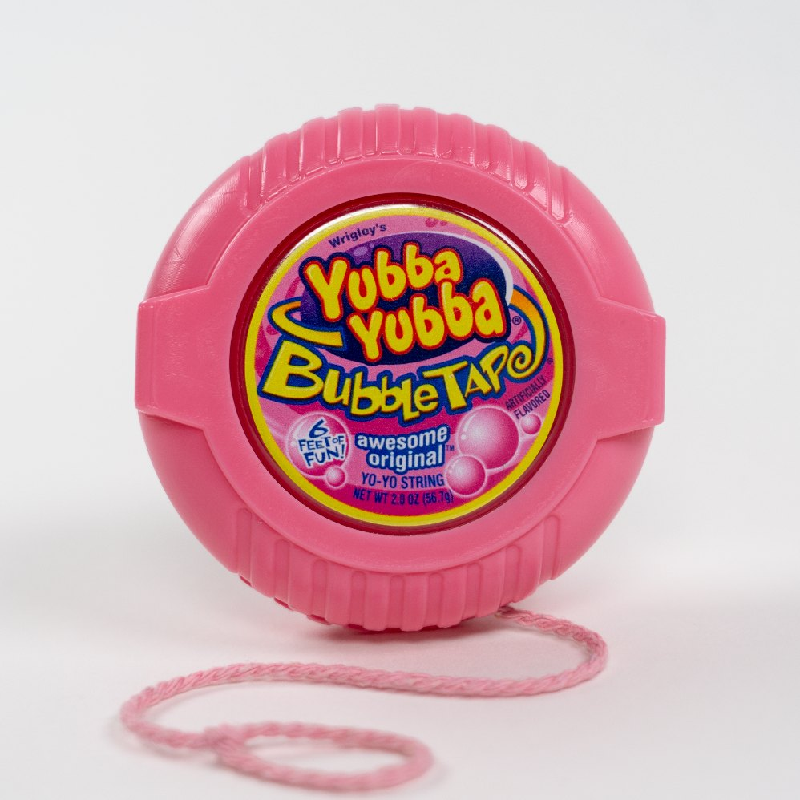
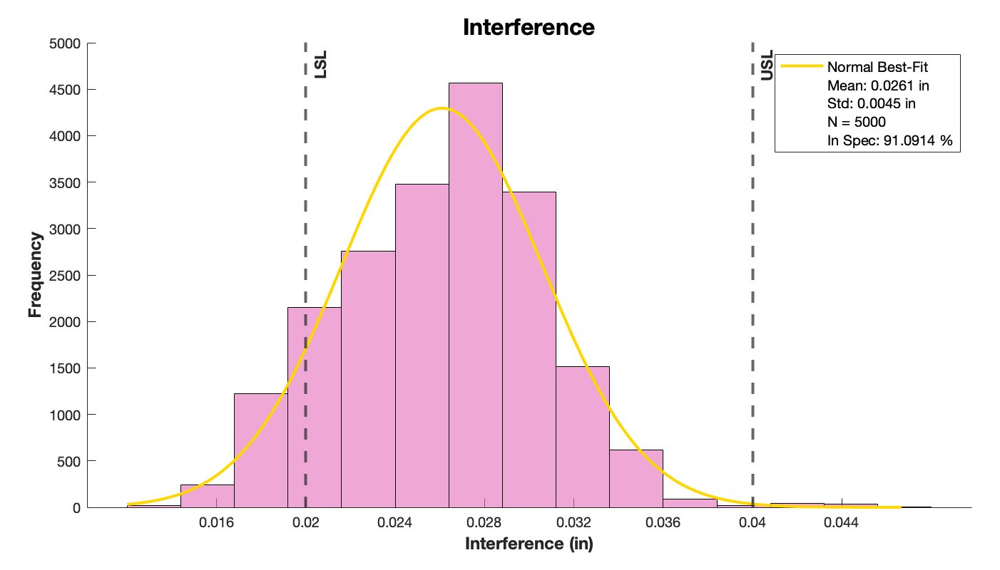
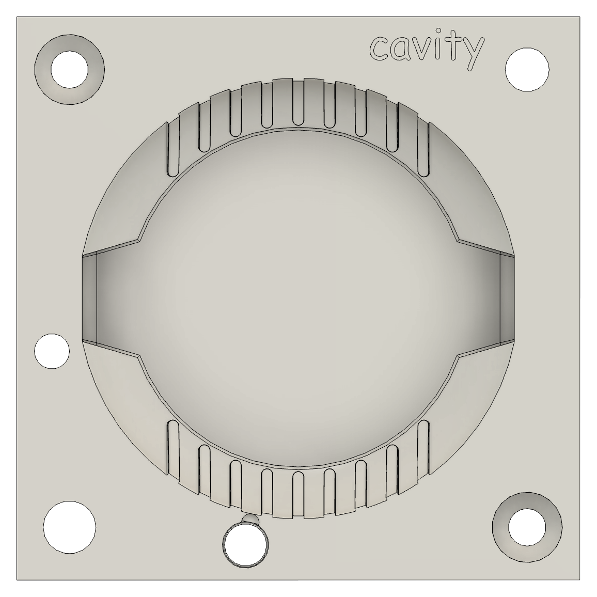
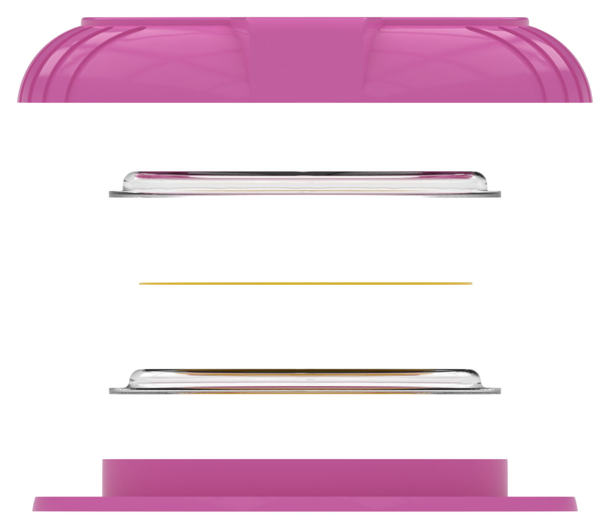
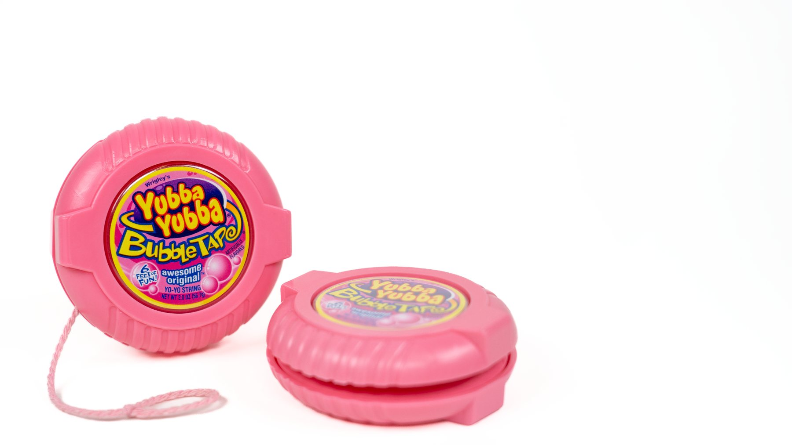
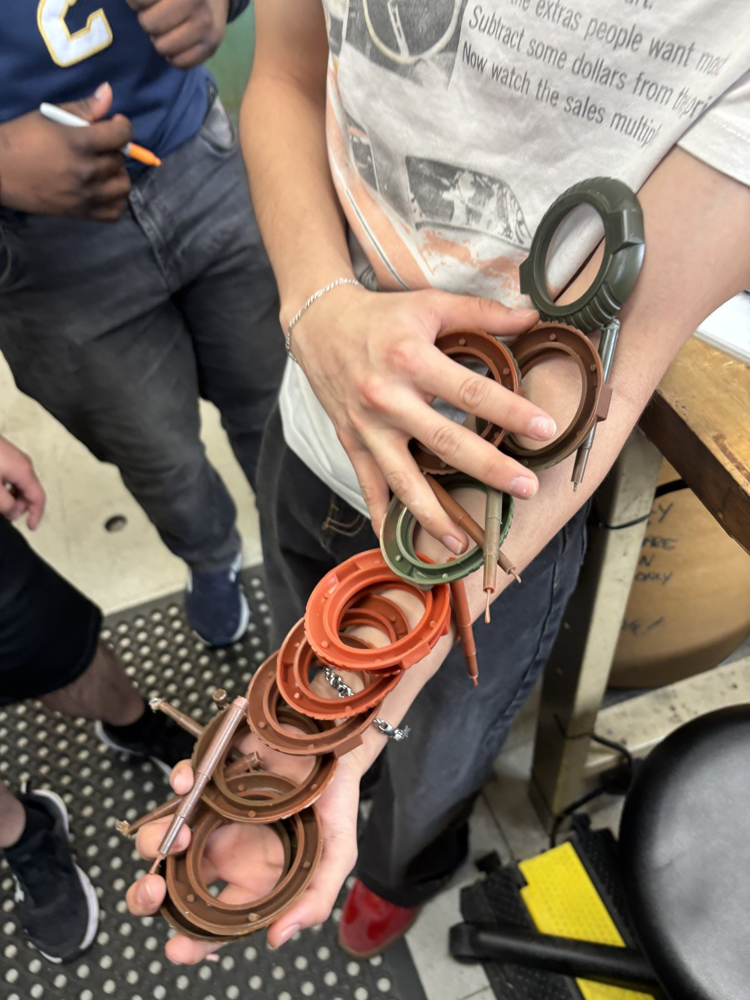
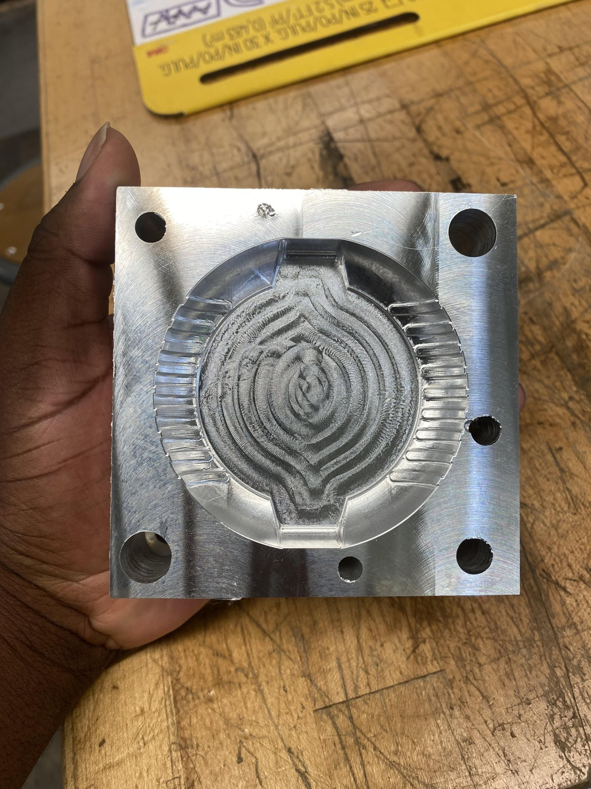
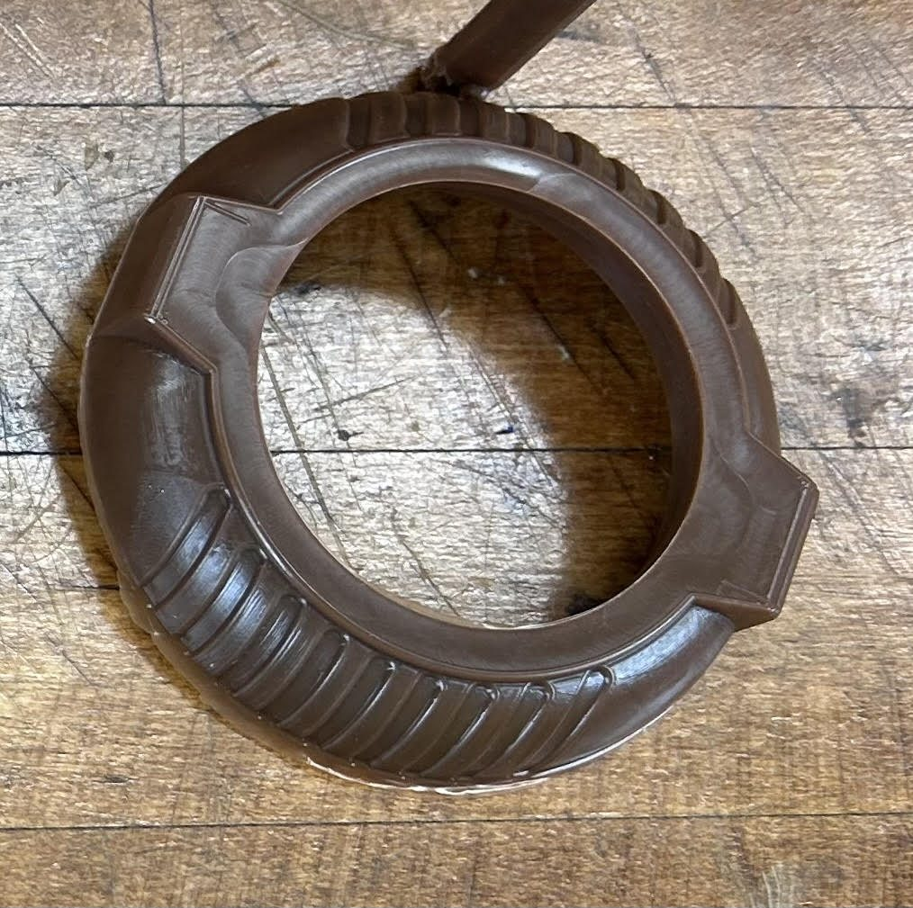
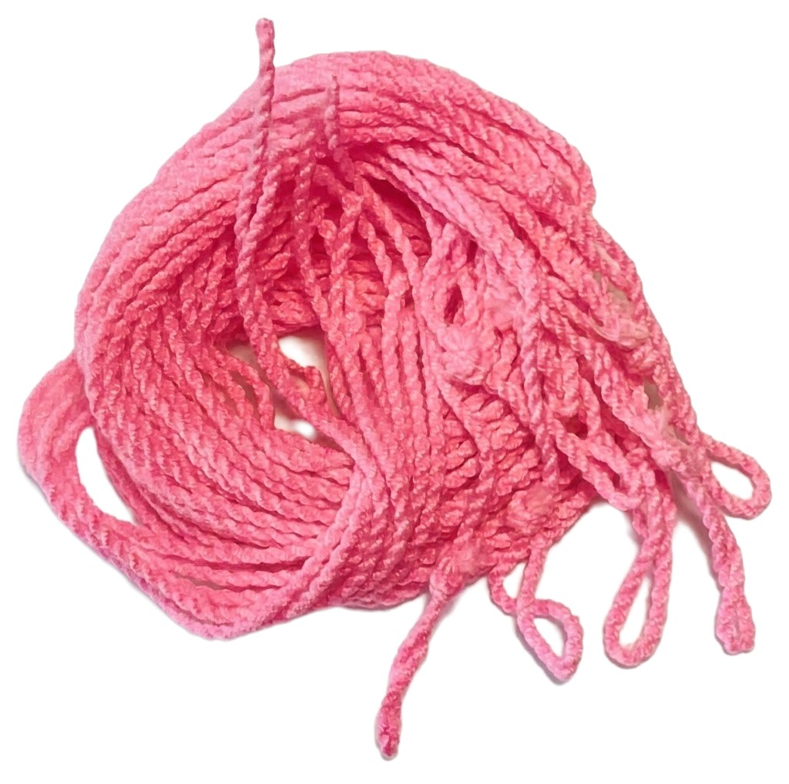

YubbaYubba

Design for manufacturing and assembly (DFMA)
2.008: Design and Manufacturing II
Spring 2026
Michelle Lam, Layla Stanton, Daniel Nwazue, Toni Tang (all MIT '27)
Fusion CAD & CAM
CNC milling
Plastic injection molding
Thermoforming
YubbaYubba is a yo-yo my team designed and mass-manufactured for 2.008: Design and Manufacturing II, paying homage to Hubba Bubba bubble gum. Applying DFMA principles, we produced 50+ identical yo-yos — plus extra colorways — from two injection-molded parts and one thermoformed part, assembled without adhesives, and every one passed the drop test. I focused on manufacturing: CAD and CAM for the injection molds, CNC milling, thermoforming, and injection molding, where I honed the process parameters.
Context/Motivation
2.008 culminates in a team project: designing and mass-producing a yo-yo. The requirements were to manufacture 50 identical yo-yos from two injection-molded polypropylene parts and one thermoformed part (PETG or HIPS) that survive a 4 ft drop test — with no adhesives allowed.
Problem Framing
With no adhesives, every joint had to hold through geometry alone and survive a 4 ft drop. Beyond the requirements, we wanted a yo-yo worthy of the gum it honors: a complex, beautiful outer surface, and a Hubba Bubba decal that wouldn't fade the way previous years' yo-yos had. Because that surface geometry would need iteration, we also needed molds we could make — and remake — quickly.
Process
Interference fit analysis and validation

With adhesives off the table, the parts had to stay together through interference fits. We sized them using empirical data from previous 2.008 classes, the press-fit insertion force formula, and our own force calculations. Binning parts during production brought 91.08% of interference fits within spec.
- g
- gravitational acceleration (32.2 ft/s²)
- hdrop
- the drop height (4 ft)
- m
- the mass of the yo-yo assembly (0.00336 slug)
- tstop
- the stopping time on impact (0.002 s)
- E
- the elastic modulus (217,557 psi)
- δ
- the interference (0.0075 in nominal / 0.0025 in minimum)
- ro
- the outer radius (1.18 in)
- ri
- the interface radius (1.08 in)
- re
- the inner radius (0.98 in)
- μ
- the friction coefficient (0.2)
- L
- the length of engagement (0.200 in)
DFM: reducing manufacturing time

To leave time to iterate on the complex surface geometry, we cut mold machining time wherever we could. We simplified the geometry of the body piece — and with it, the molds — and by carefully placing the seam line, we could even use one of the provided blanks as the body's positive mold.
DFM: eliminating surface defects
Surface defects appeared in the negative ring mold — devastating, since that was our outward-facing facade and already one of our longest machining jobs, and the groove left behind didn't show up in the CAM simulation. An offset plane alone didn't fix it; the next revision eliminated the lead-in along with adding the offset plane, which resolved the issue. It cost about 30 more minutes of machining — a worthy trade for the finish.
Double thermoform to protect the decal

We noticed that previous years' yo-yo decals had already begun to fade and weather away, so we encased our Hubba Bubba decal between two thermoformed layers to protect it.
Room for Improvement
Not much to report here — we met our goals well. Challenges like surface finish and an uneven distribution between the upper and lower spec limits were resolved along the way, and we even manufactured extra yo-yos in different colorways.
Outcome
- 50+ yo-yos produced, plus extras in additional colorways
- 91.08% of interference fits in spec, using binning
- 100% pass rate on the 4 ft drop test





Reflection
YubbaYubba taught me DFMA through the trial by fire of mass-manufacturing 50+ yo-yos. Since I was largely responsible for manufacturing, I set out to get comfortable with every CNC mill, thermoformer, and especially the injection molder — I spent enough hours with it to learn its particular quirks and hiccups, and the fixes for each.